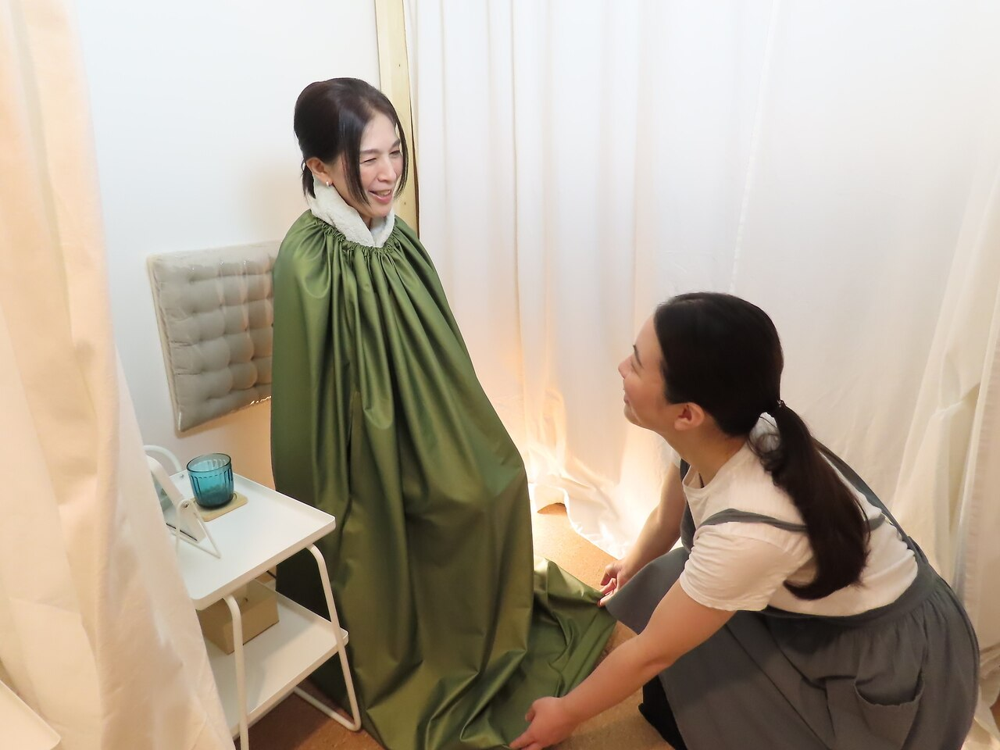
01 Yomogi steam
よもぎの香りに、
ふっとほどける40分。
黄土よもぎ蒸し
専用のマントに包まれて、黄土の椅子に腰をかける。下から立ちのぼるよもぎの蒸気を、ゆっくりと感じるひとときです。
顔は外に出したまま、温度はその都度調整。熱さが気になる方には、30分のショートコースもご用意しています。
メニューを見る ↗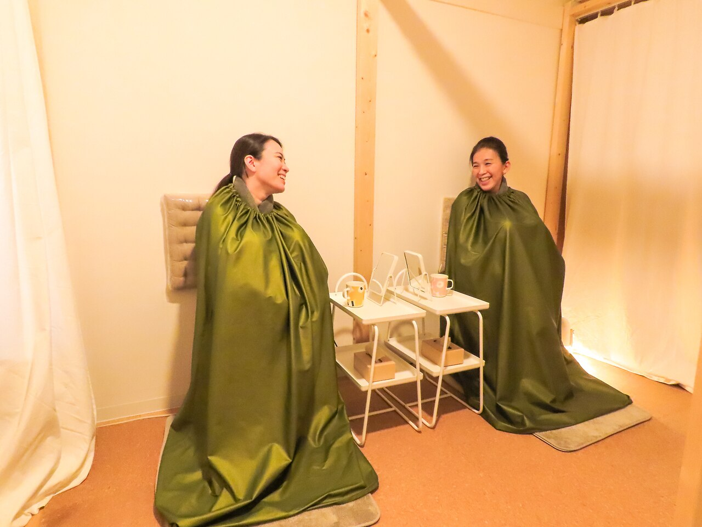
FRAN / YOMOGI STEAMTOKUSHIMA · PRIVATE SALON
首・肩の重さ、冷え、お腹の気がかりに。
よもぎ蒸し・吸玉・腸揉みを組み合わせ、
その日のあなたに向き合う養生サロン。
女性専用 ／ 完全予約制 ／ 徳島・沖浜東
温める時間と、体に向き合う手技を。
仕事中に気になる首・肩。
ふと感じる足先の冷えや、お腹の張り。
気がかりがいくつもある日は、どこからケアを始めるか迷うもの。
Franは、よもぎ蒸し・本格吸玉・腸揉みを組み合わせられる、女性のための養生サロンです。
まずは、今の体調や日々の過ごし方をうかがうことから。
決まったメニューだけでなく、90分・150分のオーダーメイドもご用意しています。
施術の名前より、まずはあなたのお話から。
周りを気にせず、
過ごせる個室。
三つのケアを、
一か所で相談。
いつも同じ担当が、
お迎えします。
よもぎ蒸し・本格吸玉・腸揉み。
一人ひとりのお話から、組み合わせを考えます。

01 Yomogi steam
黄土よもぎ蒸し
専用のマントに包まれて、黄土の椅子に腰をかける。下から立ちのぼるよもぎの蒸気を、ゆっくりと感じるひとときです。
顔は外に出したまま、温度はその都度調整。熱さが気になる方には、30分のショートコースもご用意しています。
メニューを見る ↗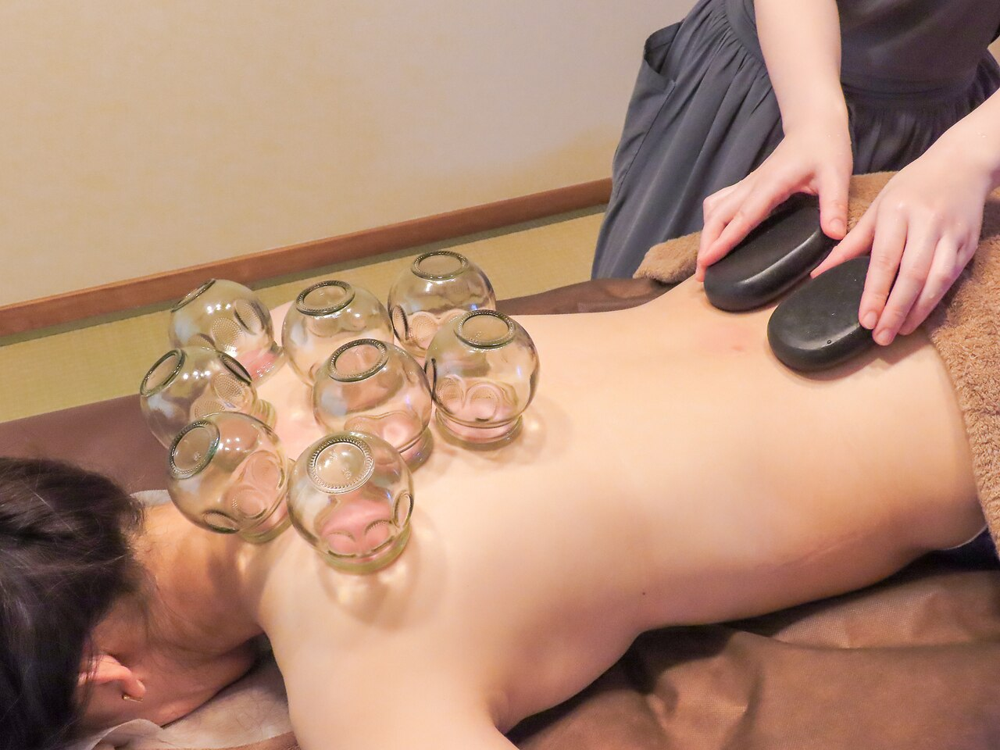
02 Cupping
吸玉・カッピング
ガラスのカップで皮膚を吸引する、伝統的なボディケア。手で押す施術とは異なる感覚を、よもぎ蒸しと組み合わせて受けられます。
お話をうかがいながら、場所も強さも調整します。強いと感じたときは、遠慮なくお知らせください。
施術後に丸い跡が残ることがあります。薄くなるまでの期間には個人差があるため、肌を出すご予定がある方は事前にご相談ください。
メニューを見る ↗A MOMENT AT FRAN
背中にそっと並ぶ、ガラスの吸玉。
Franで撮影された実際の施術の様子を、
公式Instagramの動画でご紹介します。
写真だけでは伝わりにくい、
サロンで過ごすひとときの雰囲気を。
動画が表示されない場合は、上のリンクからご覧ください。
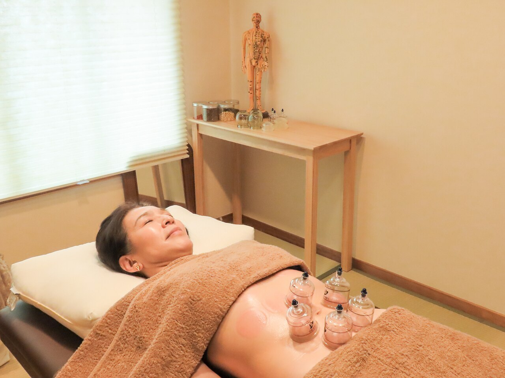
03 Abdominal care
腸揉み・お腹のケア
お腹まわりを手技でケアする腸揉み。Franでは、中医学と解剖学の考え方を取り入れ、お腹だけでなく体全体の様子をうかがいながら施術します。
「腸活UPコース」は、漢方をブレンドする蒸し・全身の吸玉（経絡マッサージ付）・腸揉みの組み合わせ。90分・150分のオーダーメイドでもご相談いただけます。
写真はFranでのお腹へのカッピング施術です。施術の組み合わせは、体調やご希望をうかがってご相談します。
腸活UPコースを確認する ↗よもぎ蒸しに10分・20分のヘッドスパを組み合わせるメニューをご用意しています。
よもぎ蒸しとのセットや、太もも・ふくらはぎ・足裏へのケアと吸玉を組み合わせるメニューも。
LISTEN TO YOUR BODY
体の図の「＋」から、気になる部位を選んでください。
選んだ部位に合わせて、ケアの候補をご案内します。
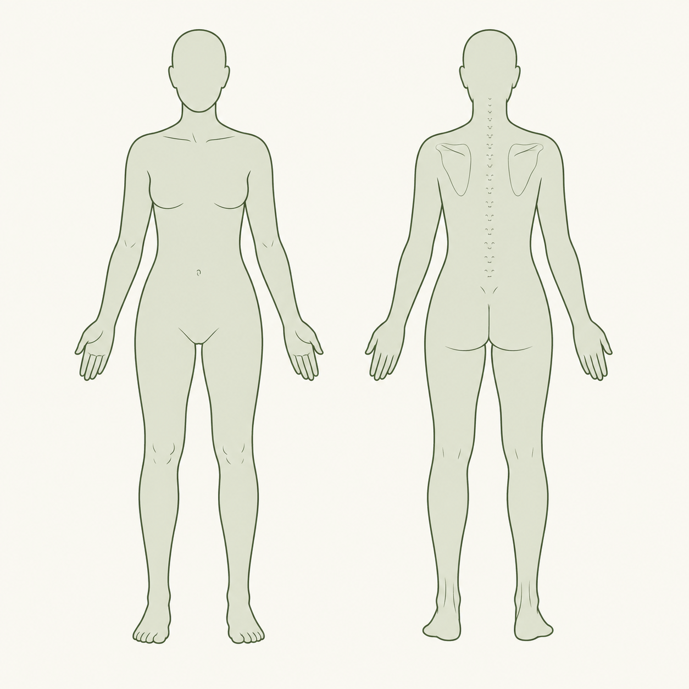
文字からも選べます
気になる部位を選んでください
名前を知らなくても、大丈夫。
気になるところを、ひとつでも、いくつでも。
メニューの候補を知る、最初のきっかけに。
施術の適否を診断するものではありません。内容はカウンセリングでご相談ください。
マントもタオルも、ご用意しています。
いつものあなたのまま、お越しください。
空席確認はホットペッパーへ。メニュー相談・ペア予約はLINEから。
体調や気になることを聞きながら、その日のケアをご相談。
専用マントへお着替え。メイク直しが必要な方は道具をお持ちください。
熱さや強さを確かめながら、無理なく、心地よいペースで。
水分をとってゆっくり。ご自宅でできるケアもお伝えします。
お一人での貸切利用にも対応しています。
ドリンクサービスと施術用のお着替えをご用意しています。
最終受付は20:30。ホットペッパーで空き状況をご確認ください。
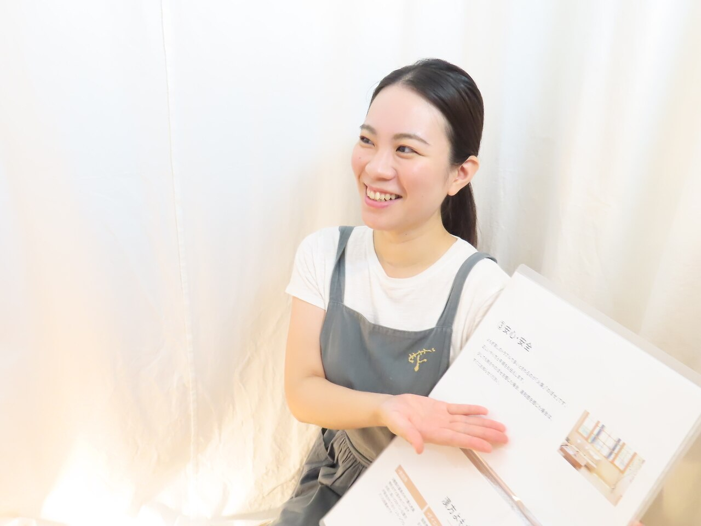
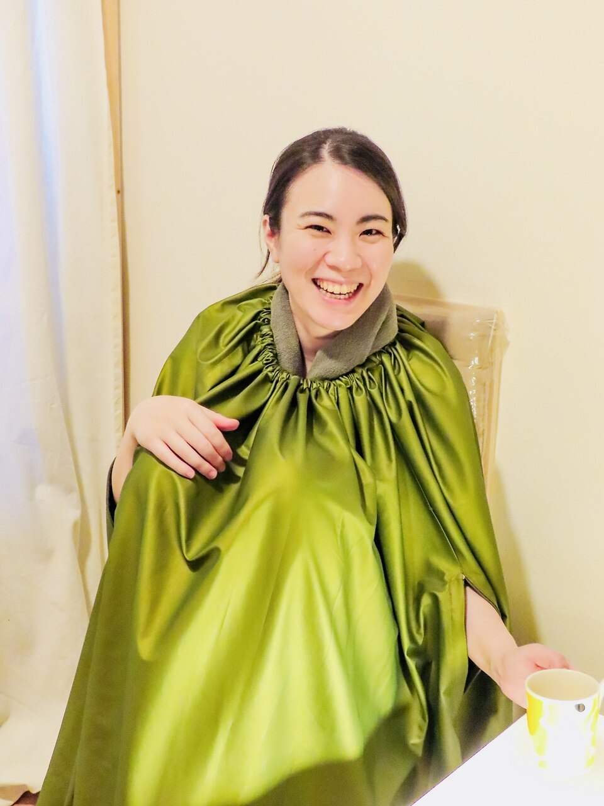
オーナー・セラピスト／よもぎ蒸し・マッサージ高瀬 ひさえ
CAとして忙しい毎日を送るなかで、よもぎ蒸しに出会った経験を持つ高瀬ひさえ。Franでは、一人ひとりの体質や、その日の状態に合わせたケアを大切にしています。
よもぎ蒸し・本格吸玉・腸揉みを中心に、ヘッドスパや足ツボも組み合わせて。体の気がかりを話しながら、ゆっくりと過ごせる時間をご案内します。
休日は猫と過ごしたり、美味しいものや自然を楽しんだり。日々の小さな幸せも、大切にしています。
ホットペッパーでプロフィールを見る ↗JOURNAL FROM FRAN
ホットペッパーのブログより。
施術への想いや、サロンで過ごす時間について。
専用マントとタオルはご用意していますので、手ぶらでお越しいただけます。汗をかくため、必要な方はメイク直しの道具をお持ちください。
顔を外に出した状態で受けられ、温度も調整できます。30分のショートコース（¥3,000）もございます。ショートコースでは、お着替えに別途5〜10分ほどかかります。熱さや気分の変化は我慢せず、その場でお知らせください。
感じ方には個人差があります。吸引の強さを調整しますので、痛いときはすぐにお伝えください。施術後に丸い跡が残ることがあり、薄くなるまでの期間も人によって異なります。肌を出すご予定がある方は、予約時にご相談ください。
生理中の方はご予約時にお知らせください。妊娠中、通院中、お薬を服用中の方は、主治医にご確認のうえ事前にご相談ください。発熱や体調不良、飲酒後、皮膚に炎症がある場合は、施術内容や日程をご相談させていただきます。
体調がすぐれないときや、飲酒後のご利用はお控えください。お食事や当日の過ごし方について気になることがあれば、事前にLINEでご相談ください。施術後は水分をとり、ゆっくりお過ごしください。
まずは1回だけでも大丈夫です。体調やご希望、生活のペースをうかがいながら、無理のない通い方をご相談します。継続される方向けの回数券もございます。
女性専用サロンです。女性お二人でのペアよもぎ蒸しも承っています。おひとりあたり初回¥3,500、2回目以降¥4,000です。ペアはネット予約対象外です。ご希望の日時をLINEでお送りください。
2台分ございます。HAMADAコーポ第二駐車場に入り、左奥から4番目・5番目、黄色いコーンが目印です。アクセス欄の駐車場写真と道順をご確認ください。分かりにくい場合は、LINEでお問い合わせください。
変更・キャンセルの手続きや条件は、ご予約先の案内をご確認ください。ご不明な点やペア予約の変更は、公式LINEへご相談ください。
よもぎ蒸し・カッピングサロン
ユニクロ徳島沖浜店の裏側。
1階に飲食店があるマンションの5階です。
OUR LOCATION第2コーポ濱田 5階・5-C
Googleマップで開く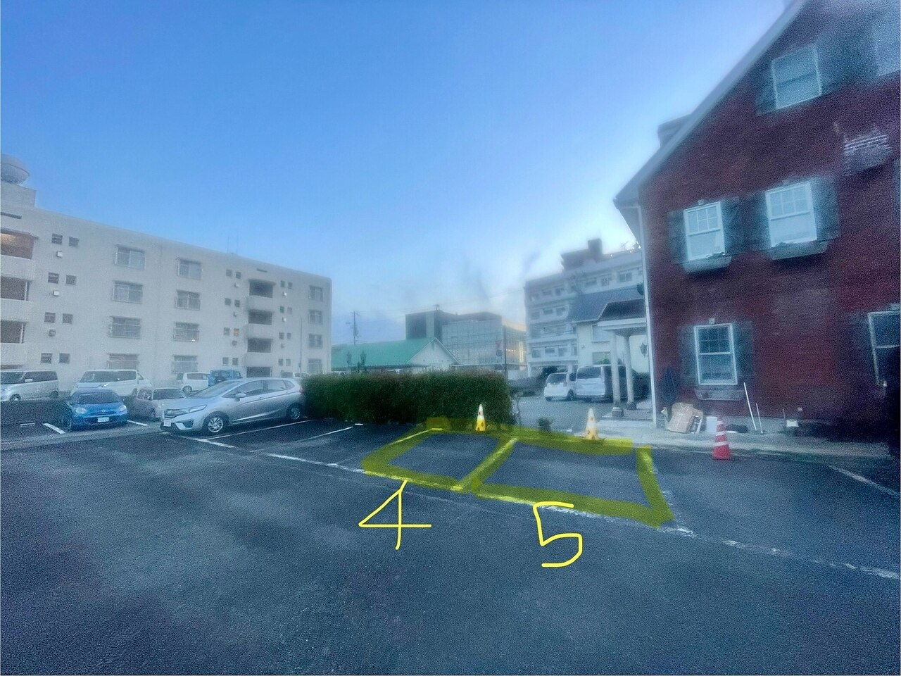
HAMADA / SECOND PARKING
駐車場は「HAMADAコーポ第二駐車場」です。下の道順写真で入口からの位置をご確認ください。
ユニクロの駐車場とは異なります。写真の黄色い枠とコーンを目印にお停めください。
駐車場までの道順を見る ↓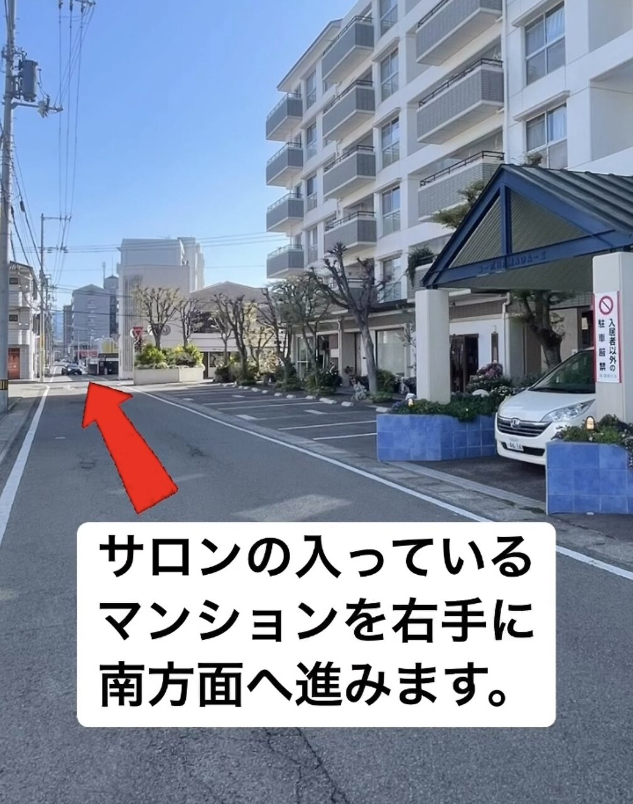
サロンが入るマンションを右手に見ながら、道路を南方向へ進みます。
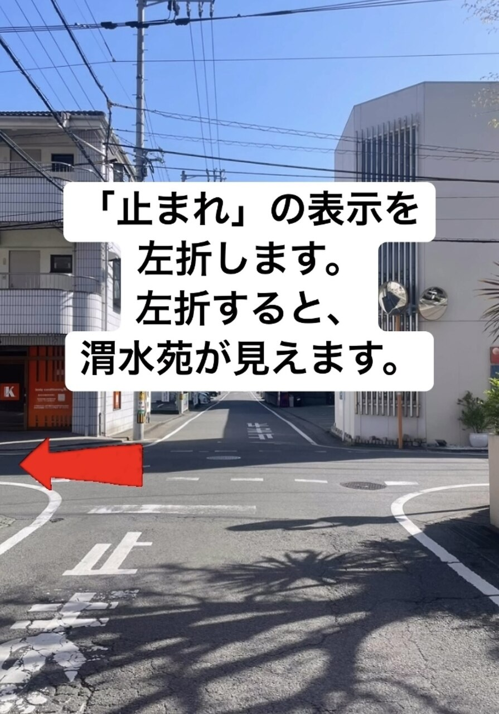
路面の「止まれ」がある交差点を左折。曲がった先に渭水苑が見えます。
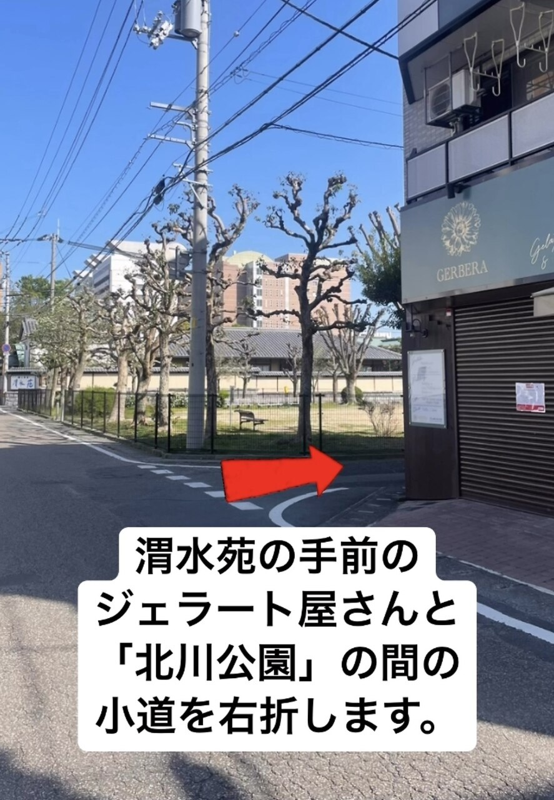
渭水苑の手前、北川公園と旧ジェラート屋さんの間の小道を右折します。
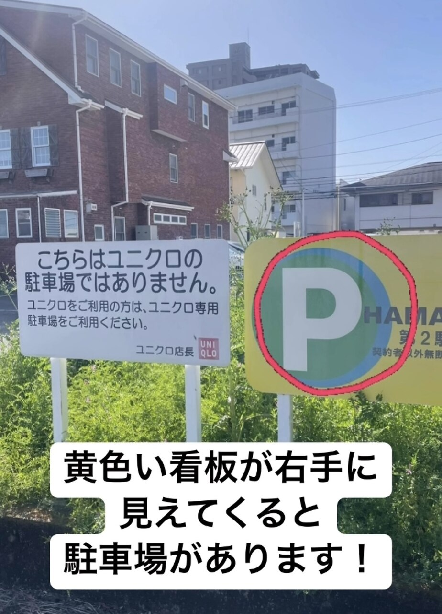
「HAMADAコーポ第二駐車場」の黄色い看板を目印にお入りください。
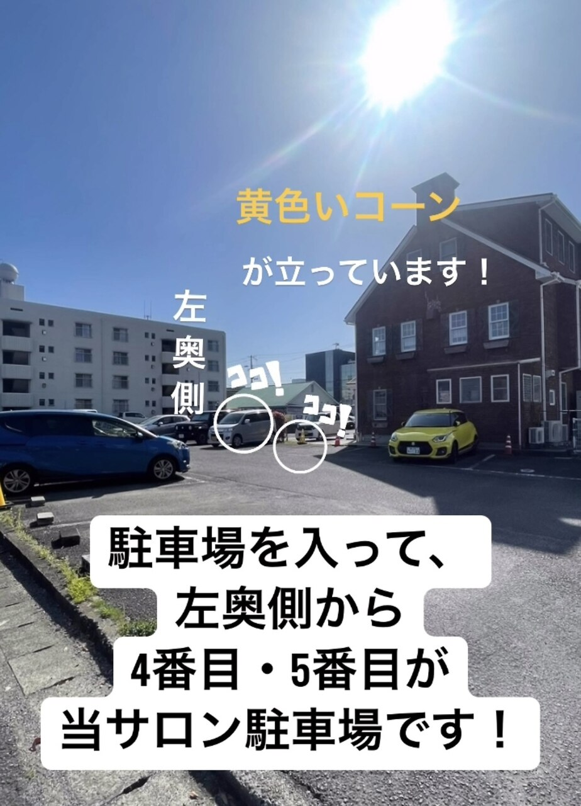
駐車場に入ったら左奥へ。左奥から4番目・5番目の、黄色いコーンがある2区画です。
写真・道順：Franのホットペッパービューティー フォトギャラリー ↗
2026年9月6日確認。目印の店舗は掲載時の名称です。
「蒸しも気になるけれど、お腹のケアも受けたい」。
メニュー選びに迷ったら、今気になっていることをLINEでお聞かせください。
日時を決めて予約したい方は、ホットペッパーへ。
メニューのご相談・ペアのご予約は、公式LINEへ。